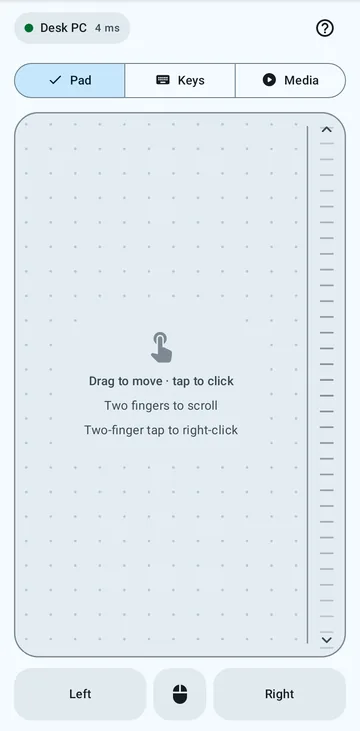
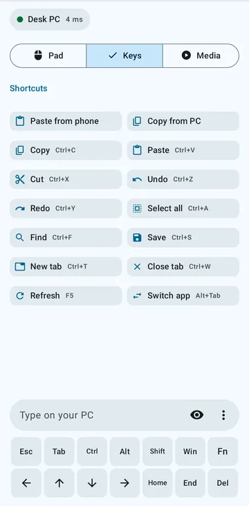
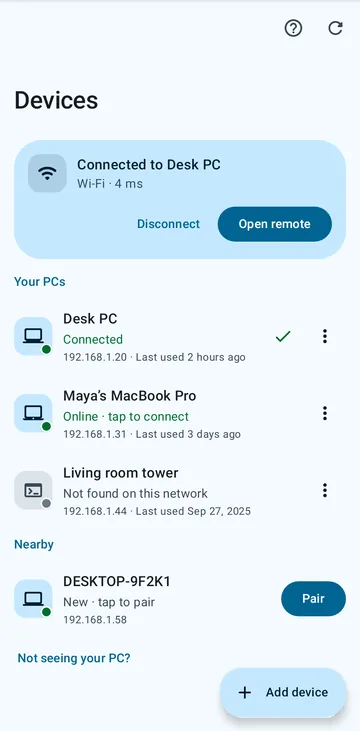
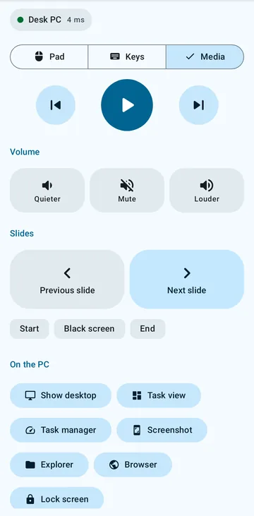
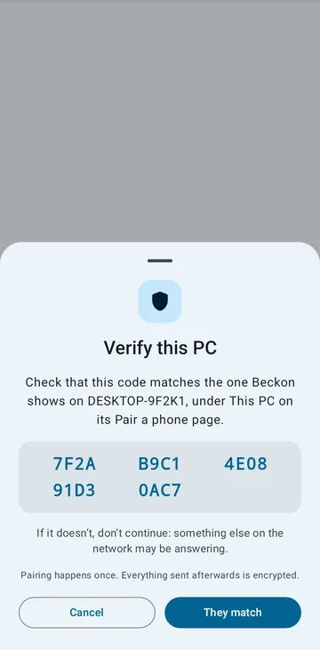
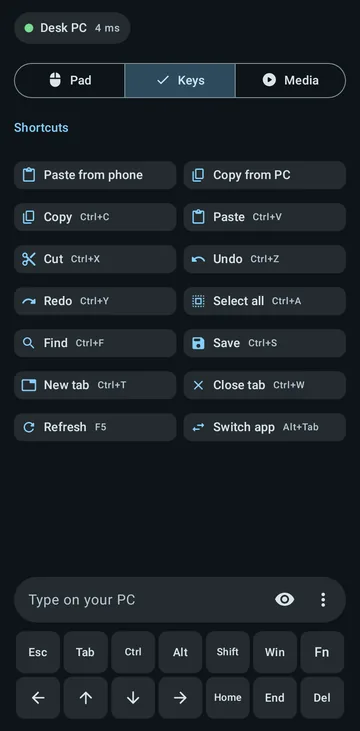
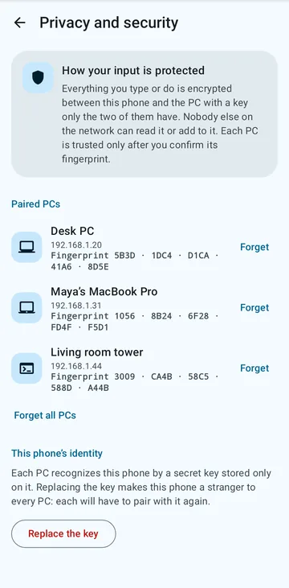

هاتفك هو لوحة اللمس والكيبورد والريموتYour phone is the trackpad, keyboard and remote
تحكّم بحاسوبك وتلفازك من الأريكة. ويندوز وماك ولينكس عبر الواي فاي أو البلوتوث، بتشفير من طرف إلى طرف، دون إرسال أي شيء إلى الإنترنت.Control your computer and TV from the couch. Windows, macOS and Linux over Wi-Fi or Bluetooth, encrypted end to end, with nothing sent to the internet.
أندرويد 9 فأحدث · ويندوز 10/11 · ماك 11+ · لينكسAndroid 9+ · Windows 10/11 · macOS 11+ · Linux


ماذا يقدّم BeckonWhat Beckon gives you
أدوات التحكم التي تحتاجها في تطبيق واحد خفيف.The controls you need in one light app.
لوحة لمس كاملةA full trackpad
حرّك، انقر بلمسة، مرّر بإصبعين، اسحب، مع إيماءات وسرعة تضبطها أنت.Move, tap to click, scroll with two fingers, drag, with gestures and a speed you set.
كيبورد بأي لغةKeyboard in any language
اكتب بلوحة مفاتيح هاتفك بما فيها العربية (عبر الواي فاي)، مع الاختصارات ومفاتيح الوظائف.Type with your phone's own keyboard, Arabic included (over Wi-Fi), plus shortcuts and function keys.
شاشة الحاسوب على هاتفكYour PC screen on your phone
شاهد شاشة حاسوب ويندوز وتحكم بها باللمس: أشر وانقر واكتب. مغلقة حتى يفعّلها صاحب الحاسوب.See a Windows PC's screen and control it by touch: point, click, type. Off until the PC's owner turns it on.
ريموت للتلفازA TV remote
تحكم بتلفاز Android TV أو Google TV عبر الواي فاي: أسهم وموافق ورجوع وصوت وتشغيل وكتابة.Control an Android TV or Google TV over Wi-Fi: arrows, OK, back, volume, power and typing.
وضع البلوتوثBluetooth mode
يعمل الهاتف ككيبورد وماوس بلوتوث بلا أي برنامج على الجهاز الآخر.The phone acts as a Bluetooth keyboard and mouse with no program installed on the other device.
مشفّر وخاصEncrypted and private
اتصال مشفّر من طرف إلى طرف على شبكتك. بلا حساب ولا تحليلات ولا إعلانات.End-to-end encrypted on your own network. No account, no analytics, no ads.
ابدأ في ثلاث خطواتStart in three steps
للتحكم بحاسوب عبر الواي فاي. وضع البلوتوث وريموت التلفاز لا يحتاجان برنامج الحاسوب.For controlling a computer over Wi-Fi. Bluetooth mode and the TV remote do not need the PC program.
ثبّت البرنامج على الحاسوبInstall the PC program
نزّل Beckon المجاني لويندوز أو ماك أو لينكس وشغّله. يعمل من شريط المهام.Download the free Beckon for Windows, macOS or Linux and start it. It lives in the tray.
ثبّت التطبيق على هاتفكInstall the phone app
ثبّت تطبيق أندرويد من صفحة التنزيل.Install the Android app from the download page.
امسح رمز QRScan the QR code
اختر «ربط هاتف» في برنامج الحاسوب وامسح الرمز. انتهى: ستتصل تلقائياً بعد ذلك.Choose “Pair a phone” in the PC program and scan the code. Done: later connections are automatic.
لقطات من التطبيقScreenshots





الخصوصية أولاًPrivate by design
لا حساب ولا تحليلات ولا إعلانات ولا تتبع. ما تكتبه يذهب فقط إلى الجهاز الذي اخترته. الكاميرا تُستخدم لقراءة رمز QR فقط.No account, no analytics, no ads, no tracking. What you type goes only to the device you chose. The camera is used only to read the QR code.
أسئلة شائعةCommon questions
هل التطبيق مجاني؟Is it free?
نعم، مجاني بلا إعلانات ولا اشتراكات.Yes. It is free, with no ads or subscriptions.
هل أحتاج إلى حساب؟Do I need an account?
لا. لا يوجد تسجيل دخول ولا خادم تابع لنا.No. There is no sign-in and no server run by us.
هل يعمل بدون إنترنت؟Does it work without internet?
نعم. يكفي أن يكون الهاتف والحاسوب على الشبكة نفسها (أو البلوتوث). لا يمر شيء بالإنترنت.Yes. The phone and the PC only need to be on the same network (or use Bluetooth). Nothing goes through the internet.
هل يمكن الكتابة بالعربية؟Can I type Arabic?
نعم عبر الواي فاي. في وضع البلوتوث تُرسل الحروف الإنجليزية والأرقام وعلامات الترقيم فقط.Yes, over Wi-Fi. In Bluetooth mode only English letters, digits and punctuation are sent.
تواصل معناContact
سؤال أو مشكلة أو اقتراح؟ يسعدنا أن نسمع منك.A question, a problem or an idea? We would like to hear from you.